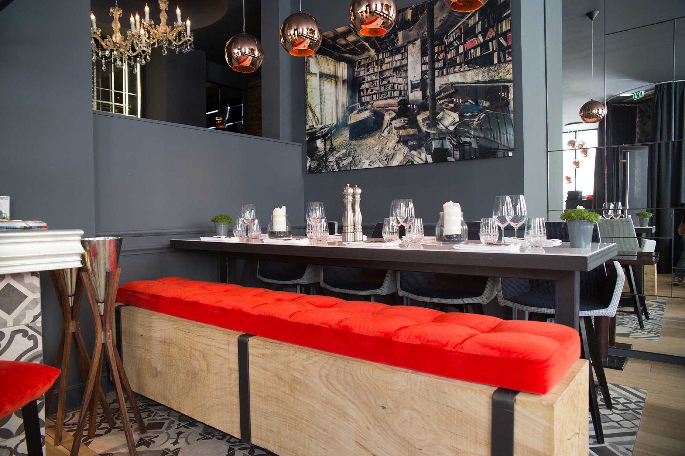
Bistrot chic · depuis le cœur du XIXe nantais
Le Cambronne
Cuisine bistronomique, velours rouge et charbon,
à vingt mètres du Cours Cambronne.
Acte I
Le quartier
Graslin, côté coulisses
À l'angle des rues Piron et de l'Héronnière, le Cambronne occupe l'un des carrefours les plus discrets — et les mieux placés — de Nantes. Le Théâtre Graslin, la brasserie La Cigale et le Cours Cambronne dessinent autour de lui le triangle des monuments du XIXe nantais.
Vingt mètres séparent la salle des tilleuls du Cours. Assez pour être au calme, assez peu pour arriver à pied de partout : on sort du théâtre, on traverse, on est à table.
- 20 mdu Cours Cambronne
- 3 mindu Théâtre Graslin
- 5 minde la place Royale
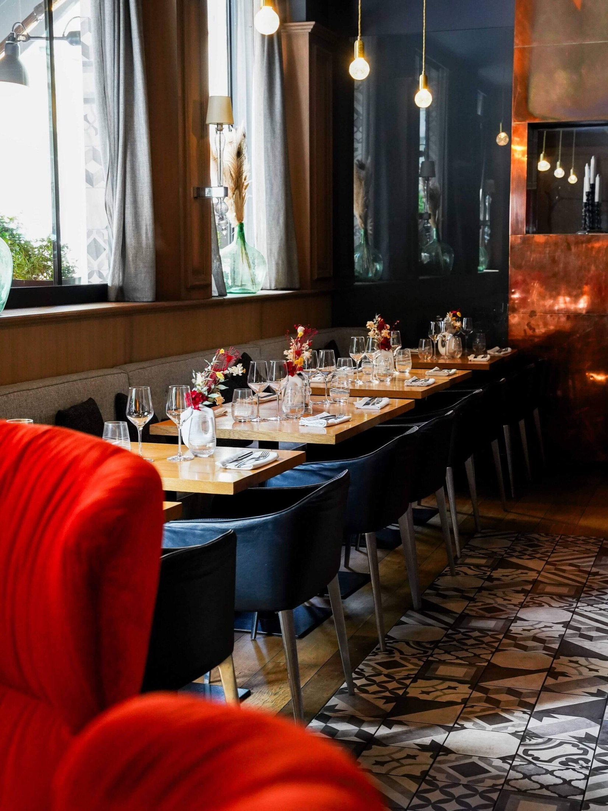
Photo à venir
La façade, angle Piron × Héronnière
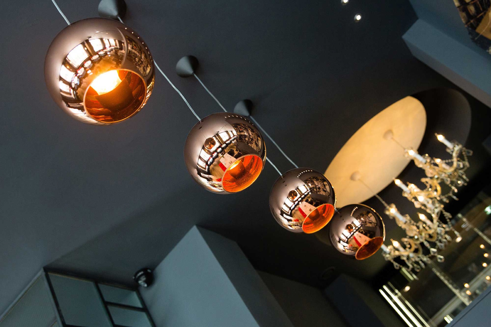
Acte II
La salle
velours, cuivre & charbon
Murs charbon, fauteuils à oreilles en velours rouge, suspensions de cuivre, bibliothèque rétroéclairée et carreaux de ciment : la salle a été pensée comme un salon de théâtre. On y dîne en tête-à-tête près du feu, en bande sur la grande tablée, ou en cercle sous le lustre de la rotonde.
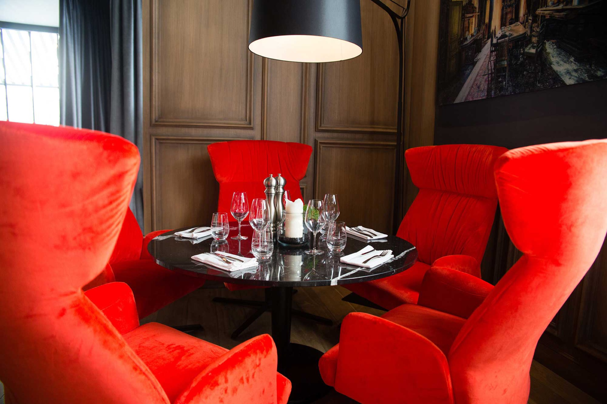
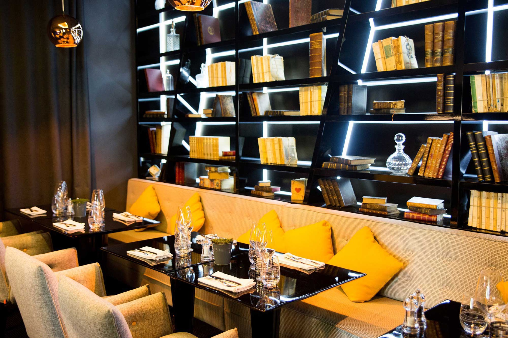
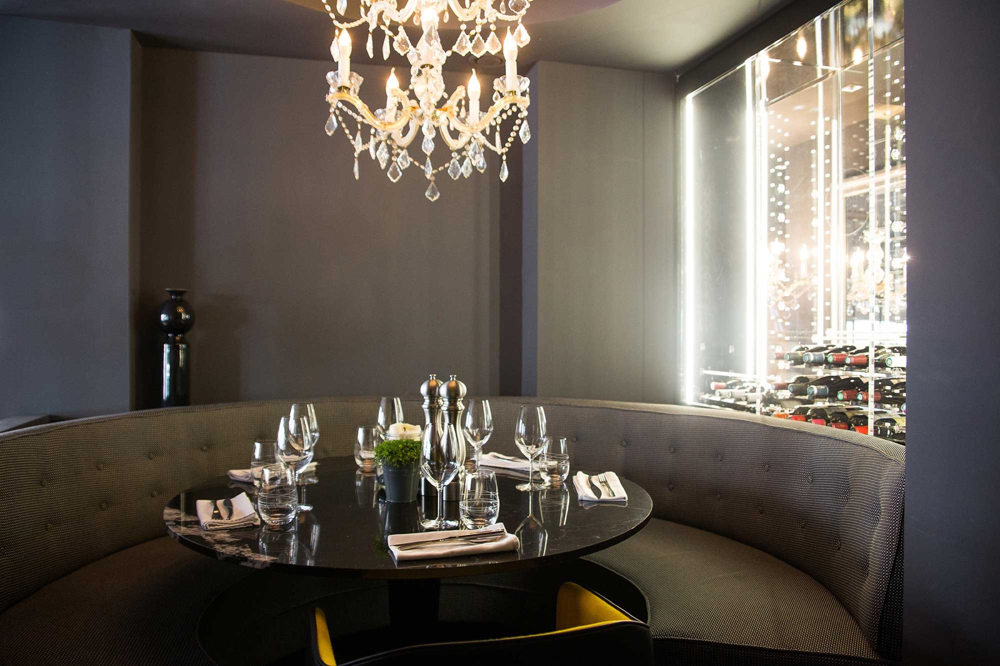
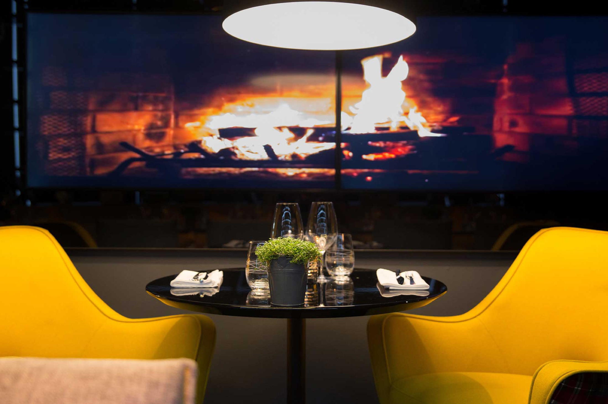
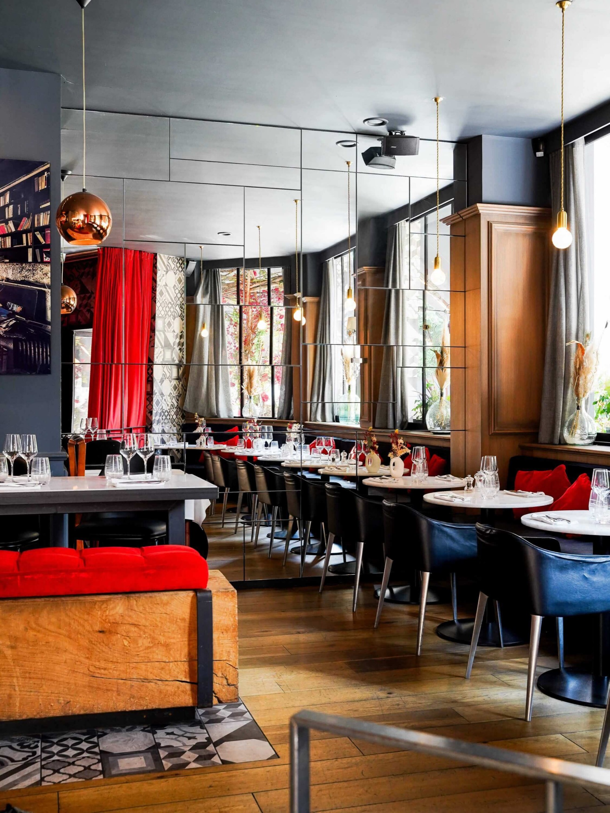
« Une adresse du centre-ville qui allie raffinement et décontraction. »
Acte III
La cuisine
traditionnelle ne veut pas dire classique
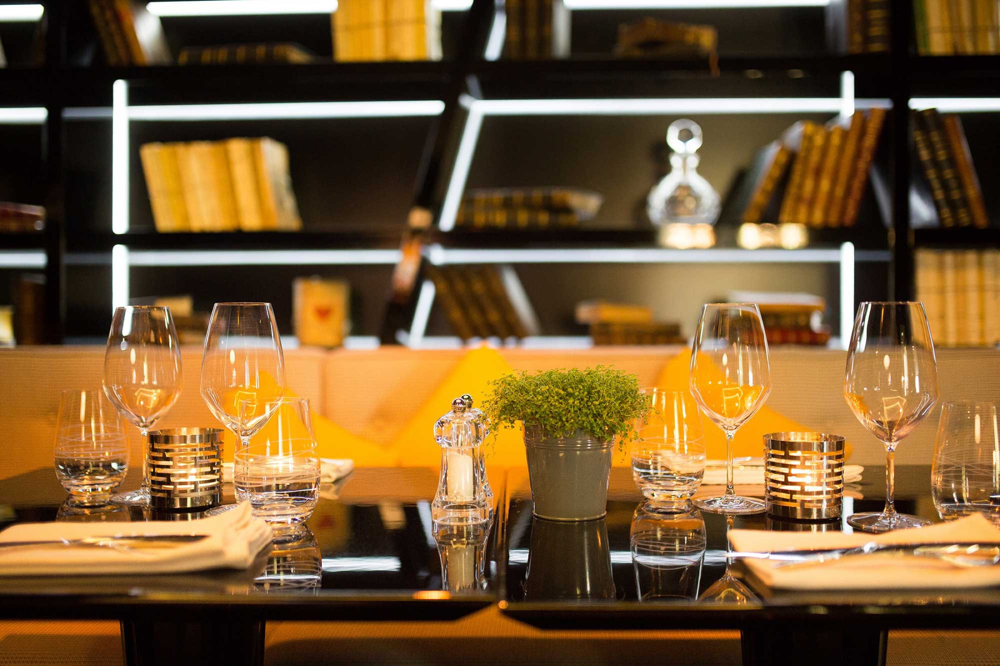
Ici, la bistronomie se joue sur des bases nettes : des arrivages quotidiens, des producteurs locaux choisis pour leur régularité, et une carte entièrement faite maison — des tapas aux desserts, sorbets compris.
Le reste est affaire de détours : un risotto truffé qui rencontre la burrata, un tartare de saumon qui passe par Séoul, une dorade qui cuit en feuille de bananier. Généreux dans l'assiette, précis dans l'exécution.
100 % fait maison
Arrivages quotidiens
Producteurs locaux
À la carte, en ce moment
- Croq' foccacia truffé15,90 €
- La langoustine19,90 €
- Risotto truffé, burrata & jambon serrano28,90 €
- Thon mi-cuit au sésame29,00 €
- Filet de bœuf français34,00 €
- Le Cube12,50 €
Photo à venir
Le risotto truffé à la burrata
Photo à venir
La criée du jour
Photo à venir
Le Cube — dessert signature
Acte IV
La cave
de la Loire aux grands crus
La carte des vins commence à la maison : quatre muscadets de Sèvre-et-Maine, de Ménard-Gaborit au Clisson de l'Épinay, puis remonte la Loire — Cheverny, Sancerre, Pouilly-Fumé — avant d'ouvrir sur la Bourgogne, le Rhône et le Bordelais.
Et pour les grandes occasions, la Belle Cave aligne ses flacons rétroéclairés derrière la rotonde : Chablis 1er cru de Patrick Piuze, Gevrey-Chambertin, jusqu'à l'Échezeaux Grand Cru 2008 de Cécile Tremblay.
TVA et service inclus — la plupart des références au verre, en 50 cl et en bouteille.
La carte des vinsPhoto à venir
Les flacons de la Belle Cave
La Belle Cave — quelques flacons
- Chablis 1er cru « Les Forêts » 2020 Patrick Piuze80 €
- Sancerre « Les Monts Damnés » 2018 Dom. Delaporte60 €
- Gevrey-Chambertin 2020 Dom. Pernot Père & Fils90 €
- Bandol 2019 Domaine Tempier85 €
- Échezeaux Grand Cru « Du dessus » 2008 Cécile Tremblay560 €
Acte V
La terrasse
le rouge, côté jour
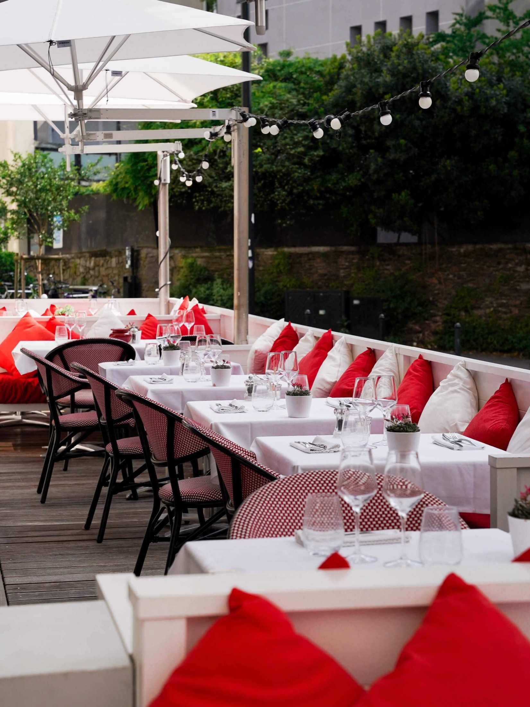
Aux beaux jours, le velours passe dehors : nappes blanches, coussins rouges, parasols et guirlandes. La terrasse se glisse le long de l'Héronnière, à l'abri du flux de la place Graslin — le soleil en plus, le bruit en moins.
Réservation conseillée en terrasse, midi comme soir.
Réserver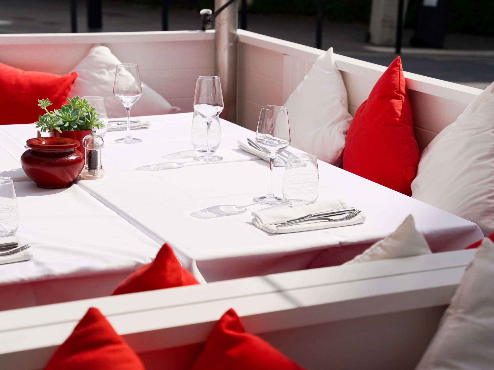
Acte VI
Infos pratiques
venir, réserver
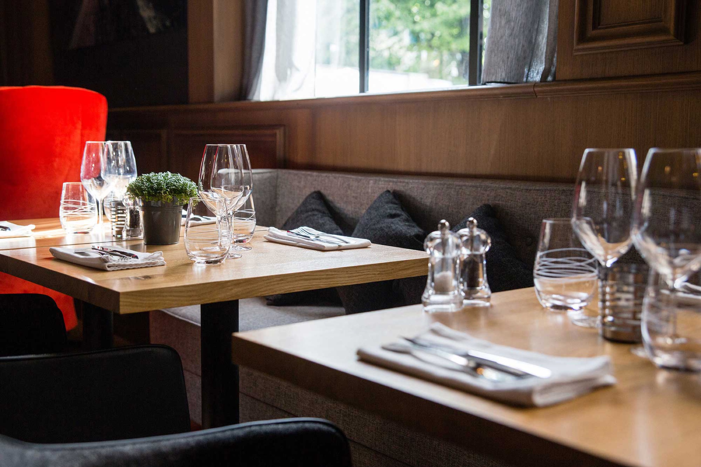
Horaires
| Lundi — jeudi | 12h00–14h30 · 19h00–22h30 |
|---|---|
| Vendredi — samedi | 12h00–14h30 · 19h00–23h15 |
| Dimanche | 12h00–14h30 |
Ouvert 7 j/7 — dimanche midi uniquement.
Adresse
6 rue de l'Héronnière
44000 Nantes
angle rue Piron — quartier Graslin
Parkings
- Médiathèque — 200 m
- Graslin — 400 m
- Petite Hollande — 500 m
Réserver
En ligne, en quelques secondes, ou par téléphone aux heures de service.
Réserver en ligne 02 40 47 36 42